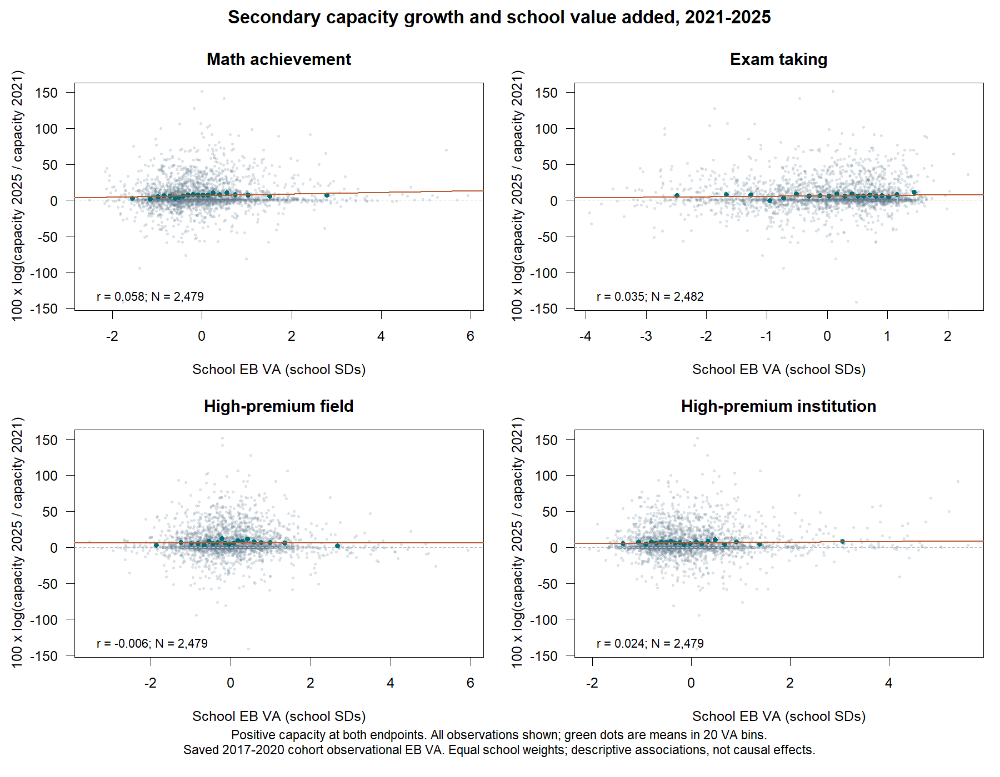

Do higher-VA schools expand secondary capacity?
Change in SAE process-year declared secondary capacity from 2021 to 2025, matched by RBD to the project's saved 2017-2020 cohort school VA.
The descriptive correlations are small. The first four outcomes are the established school-preference VA measures; the remaining four are supplementary outcomes from the same saved file. Main correlations weight each school equally and use empirical-Bayes adjusted observational VA. They do not estimate a causal effect or a forecast based on information available in 2021.
Endpoint correlations
| VA | Schools | Pearson_pct_growth | Rank_pct_growth | Pearson_seat_change | Pearson_log_growth_continuers | Pearson_pct_base_100plus |
|---|---|---|---|---|---|---|
| Math achievement | 2503 | 0.053 | 0.059 | 0.040 | 0.058 | 0.051 |
| Exam taking | 2506 | 0.020 | 0.050 | 0.039 | 0.035 | 0.037 |
| High-premium field | 2503 | 0.002 | 0.008 | -0.013 | -0.006 | 0.006 |
| High-premium institution | 2503 | 0.022 | 0.006 | 0.022 | 0.024 | 0.023 |
| Language achievement | 2503 | 0.051 | 0.063 | 0.030 | 0.055 | 0.051 |
| Higher-ed enrollment | 2506 | -0.006 | 0.003 | -0.001 | 0.009 | -0.004 |
| Financial-aid application | 2506 | -0.015 | 0.002 | -0.014 | 0.000 | -0.011 |
| Log predicted program income | 2503 | 0.040 | 0.026 | 0.042 | 0.047 | 0.044 |
Percentage growth = 100 x (capacity in 2025 / capacity in 2021 - 1). Start with all 2511 positive-capacity 2021 schools; 24 have zero or no secondary capacity listing in 2025 and enter as -100%. New listings with no positive 2021 capacity are excluded because their growth rate is undefined. Matched coverage is 99.7%-99.8%.
Log growth uses positive-capacity continuers only. The final column restricts baseline capacity to at least 100 seats and retains exits. No matched school is trimmed in the main result. The baseline panel includes RBD 16970, EDUCERE COLLEGE, going from one declared seat to 140 (13,900% growth), and RBD 16780 growing 600%; neither has a matched VA estimate, so neither enters any reported correlation. The largest matched percentage growth is 354.3%. Rank/log/100-plus checks address the influence of small initial capacity among matched schools.

Each annual change within 2021-2025
Columns denote the ending process year, e.g. 2022 is growth from 2021 to 2022. Pearson correlations of percentage growth with fixed EB VA; each year's prior positive-capacity schools define the sample.
| label | 2022 | 2023 | 2024 | 2025 |
|---|---|---|---|---|
| Math achievement | 0.040 | 0.056 | -0.001 | 0.041 |
| Exam taking | 0.025 | 0.009 | -0.003 | -0.015 |
| High-premium field | -0.006 | 0.018 | 0.022 | -0.029 |
| High-premium institution | 0.010 | 0.019 | -0.002 | 0.009 |
| Language achievement | 0.050 | 0.033 | 0.017 | 0.031 |
| Higher-ed enrollment | 0.019 | -0.018 | -0.017 | -0.032 |
| Financial-aid application | 0.031 | -0.033 | -0.047 | -0.038 |
| Log predicted program income | 0.041 | 0.037 | 0.013 | -0.017 |
Interpretation and scope
Capacity is cupos_totales summed across grades 9-12 and programs in regular-round A1. This is not enrollment or advertised vacancies. Process years 2021-2025 concern entry years 2022-2026. These years have full national secondary SAE coverage. Missing 2025 listings are zero listed capacity, not proof of closure.
The VA file uses grade-8 cohorts 2017-2020 and later outcomes, so its measurement period overlaps these capacity years. Estimates are adjusted observational school effects with EB shrinkage, not separately lottery-identified effects for every school. This is an unweighted association of estimated VA with capacity growth, with no controls or measurement-error correction. No p-values are used for the exploratory comparison.
Downloads
Main correlations | All sensitivities including unshrunk VA | School-level matched data | Original annual SAE report